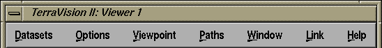

The 3-D Viewer "Window" Menu

Show Menu Bar
This option can be used to toggle the display of the menu bar at the
top of the window. You can also perform this operation by pressing 'M'
on the keyboard. The keyboard shortcut is important to know because
once you have hidden the menu bar, you cannot access the menu option
to bring the menu bar back!
Show Web Icons
This option can be used to toggle the display of the web icons panel
at the bottom of the window. You can also perform this operation by
pressing 'W' on the keyboard.
Show Status Bar
This option can be used to toggle the display of the status bar at the
bottom of the window. This gives you various pieces of information
including your current navigation mode and view mode. You can also
perform this operation by pressing 'A' on the keyboard.
Show Fullscreen
This option toggles the 3-D Viewer fullscreen capability. When
selected, the viewer will be expanded to fill the entire screen. Then
when you deselect this option, the window will return to its previous
size and position. You can also perform this operation by pressing 'F'
on the keyboard.
TerraVision Home Page